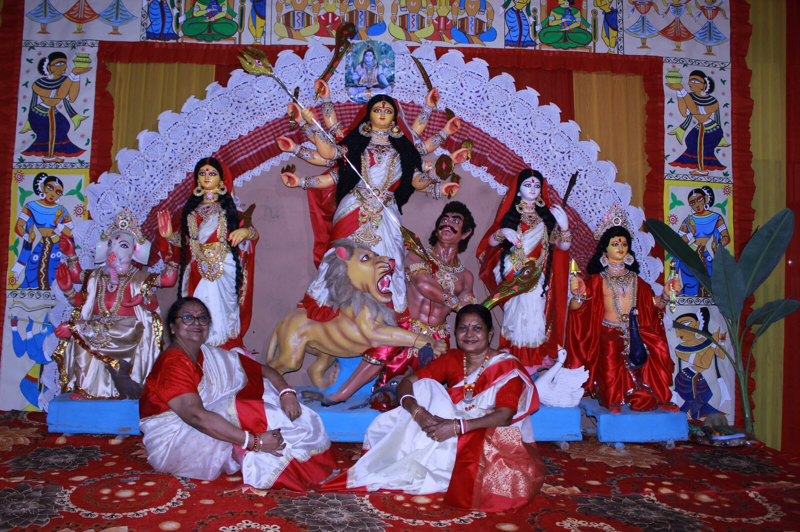
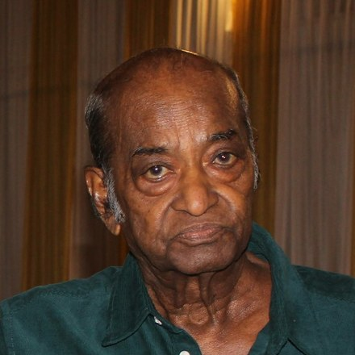
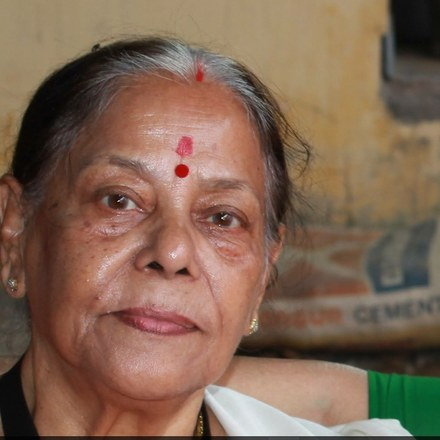

Preserving our heritage, culture and community since 1982.
Gurugram's oldest Durga Puja organisation, preserving Bengali heritage, culture and traditions since 1982.

This historical account documents the evolution of Gurgaon Bengalee Association and Gurugram's oldest Durga Puja, preserving the memories, dedication and contributions of the countless members who helped shape this wonderful community.
Socialism among Bengalis, especially the middle class trying to connect with each other, working for society by forming organizations, participating in Pujo Parban, no matter their geographical location, runs deep.
If anything, Bengalis are known for their extraordinary Durga Puja celebrations. In Gurugram, the celebrations date back to 1982, however, Gurgaon Bengalee Association (GBA) was formed later in 1996 making it the first statutory body in Gurugram dedicated to the promotion of Bengali culture.
Many leaders of the All India International Bengali Association and Bengali Association, Delhi, were first a part of the GBA.
Throughout the years, Bengalis have made Gurugram their home. Some stayed while some others left. But not one said goodbye without contributing towards the community.

Conch Shell Ganpati
Artwork by Nivedita Chaira
Coming to Gurgaon in the early 80s has given me the opportunity to witness the remarkable transformation of Gurugram—the growth of the Bengali community, the grandeur of Durga Puja, and the creation and prosperity of the Gurgaon Bengalee Association.
Those who initiated the very first Durga Puja were Dasgupta Da, Nyogibi Babu, Bhowmik Da, Gupta Da, Sinha Da, Chowdhury Da and Ranjan Dutta. Later, Goswami Da and Goswami Boudi joined them, while Mrs. Chanda played an extremely important role as a dedicated worker.
Almost all of them came from West Bengal with the shared dream that people who had travelled to Gurgaon in search of livelihood should also have a place where they could preserve their culture, celebrate festivals and continue their social traditions together.
A.K. Bose, affectionately known as Bhog Bose, looked after the Bhog arrangements, while Bhagwan Das took on the responsibility of creating the first Maa Durga idols during the initial years of the celebrations.

Durga Maa
Artwork by Lopamudra Ganguly
In 1986, a group of enthusiastic and like-minded Bengalis joined the celebrations when GBA was still only a concept taking shape.
Among them were Abhijit Banerjee, Shyamal Guha, Subodh Chowdhury, Mrinal Bakshi, Anup Banerjee, Udayan Banerjee, Shashank Karmakar, Jayant Banerjee and Alak Das.
One of the strongest pillars during those years was Ranjan Dutta, an excellent organiser who lived in Sector 14. During the 1985 Durga Puja he invited Rama Chakraborty to participate in the cultural programme. From that moment onward, she became one of the regular performers, singing for nearly two decades.
As more Bengali families settled in Gurgaon, the celebrations grew richer every year, bringing together music, theatre, dance and community service.
The next generation of volunteers consisted of Debashish Banerjee, Narayan Ghosh, Asim Samanta, Arup Bhattacharya, Basanti Gupta, Sahana Banerjee, Aarti Guha, Durba Banerjee and Suma Ghosh.
Their families became the heart of GBA's cultural calendar and contributed through music, theatre, dance, literary programmes, children's activities and numerous festivals throughout the year.
Ashok and Ratna Ghosh, along with Pranabesh and Polly Dutta, arrived in Gurgaon shortly before 1990 and immediately became an integral part of the Association.
The first President of the Gurgaon Bengalee Association was Shri Shantanu Sinha. Since then, Durga Puja Committees have been formed every year under the banner of GBA, continuing a tradition that still thrives today.
The Gurgaon of the 1990s was very different from the modern city we see today. The Bengali community was concentrated mainly in Sectors 4, 7, 14, MDI, RIDPL and Char Marla.
Narayan Ghosh joined the Durga Puja shortly after Ashok Ghosh (fondly known as Ghosh Da), who remained associated with the celebrations for many years.
Prasoon and Babli Dutta introduced several innovative ideas. As President, Prasoon experimented with many organisational initiatives while Debashish Banerjee enriched the Association through theatre.
As participation increased, members brainstormed ways to involve every Bengali family living in Gurgaon.
Door-to-door Matador services were arranged during Durga Puja mornings and afternoons, making it easier for families to join the festivities.
Evenings came alive with theatre directed by Debashish Banerjee, performances by Shyamal and Aarti Guha, Polly Dutta, and memorable group dances led by Suma Ghosh and her team.
As the years progressed, professional artists from outside Gurgaon also became a part of the celebrations, making GBA's Durga Puja one of the most anticipated festivals in the city.
The child artists of yesterday— Papai, Liza and Gargi— have all grown up while continuing their association with GBA through music, dance, theatre and cultural performances over the years.
With the onset of the 2000s came new Durga Puja committees, increasing the overall number of celebrations across Gurgaon. The grand, large-scale Durga Pujas seen today came much later, but GBA continued to uphold the traditions that had been built over decades.
Debashish Banerjee's theatre productions, strengthened by Arup Bhattacharya, and the powerful recitations of Asim Samanta remained among the most loved cultural attractions.
The Association continued to evolve while remaining deeply rooted in its cultural heritage, bringing together families through music, literature, theatre and community service.

Dhaaki
Artwork by Soumen Saha
The journey of Tirtha Mitra began when he arrived in Gurgaon during the mid-1990s. Initially contributing through music, he gradually became one of the key organisers of the Association and today serves at the National level.
Alongside him, Somnath, Manas Chakraborty, Dr. Tridib Chaira, Debashish (Bappa) Mitra, Anshuman Chakraborty, Sougata Dowari, Deepayan Ganguly, Bappaditya De Sarkar, Manik Das, S.K. Pal, Diwakar, Asim Sheel, Shantanu Daan, Chinmoy Chatterjee, Alok Sinha and Raja Ghosh all contributed through their honesty, sincerity, hard work and devotion.
The leadership of GBA has always embraced change while preserving tradition. Following Shri Shantanu Sinha, the responsibility of leading the Association was taken forward by Shri Ashish Dasgupta.
Under his leadership, members continued celebrating New Year, Durga Puja, Kali Puja, Saraswati Puja, and annual family picnics, while welcoming renowned artists from Kolkata and Delhi.
Shreyasi Mitra expertly supervised Maa Durga's worship. Piu Banerjee worked tirelessly with Tapati Sarkar and writer Jayant Babu to ensure smooth organisation of the Puja.
Polly Dutta and Asim Samanta later founded the Bangla School under the GBA banner. Every Sunday, students of different age groups come together to learn and preserve the Bengali language.
Within a decade, Tirtha Mitra became President, supported throughout by Tapasi, who contributed as a capable partner to every initiative.
Bithika Rao, Mishtu Sinha, Reshmi Chakraborty, Nivedita Chaira, Supriya and many other talented ladies have hosted and enriched GBA's cultural programmes through the years.
A special mention belongs to Pompa, whose remarkable talent in design and fine arts continues to inspire everyone.
Kar Boudi, Chandana, and Das Boudi have always extended their wholehearted support to the Association.
The worldwide COVID-19 pandemic brought life to a standstill. Yet the spirit of the Gurgaon Bengalee Association never faded.
The Association organised Durga Puja while strictly following COVID protocols, proving once again that community, faith and togetherness remain stronger than adversity.

Artwork by Lopamudra Ganguly
Before I finish writing, I would like to remember one of the founders of our Association, who devoted years of service to GBA through its cultural programmes. Niloy Hazra and his wife Babli suffered the heartbreaking loss of their talented son, Ayan Hazra. The entire Gurgaon Bengalee Association fondly remembers him.
On behalf of the entire GBA family, I also remember those without whose unstinting cooperation the Association could never have reached where it is today.
We gratefully acknowledge the invaluable support and dedication of Smt. Aarti Guha, Mrs. Sahana Banerjee, Shri Narayan Ghosh, Shri Ashok Ghosh, Shri Anup Kar, Professor T.K. Das, and Dr. D. Sengupta.
The Youth Committee led by Debashish Mitra, Sandeep Dasgupta, Anirudh Ghosh, Sutanu Dutta, Abhishek Gupta, Abhishek Banerjee and Somnath Bose continues to carry forward the Association's vision with tremendous enthusiasm.
Finally, if Shri Shyamal Guha had not opened his own home for Association meetings, many of the plans, discussions and activities that shaped GBA would never have been possible. His generosity gave the Association its first real home.
Personal reflections from members who have been part of GBA's journey, in their own words.

Founding Member, GBA :; on the earliest days of the Bengali community in Gurgaon, and the founding of GBA
বাঙালি খাপছাড়া এদিকে ওদিকে কয়েকটি ঘর। ছোট্ট একটা গ্রাম্য পরিবেশ "গুড়গাও" সহরে। সবাই মোটামুটি "হচ্ছে" "খাচ্ছে" বাঙালি। বাংলা ভাষার প্রয়োগ না থাকায় হিন্দি বাংলা মিশিয়ে চলনসই অভিব্যক্তি।
মাছের বাজারে দাদা কোথায় থাকেন? থেকে শুরু তারপর সপরিবারে বাঙালি সমাজে এ ওর বাড়িতে অতিথি। আলাপ আলোচনা এবং সভা।
আসুন সবাই মিলে বাঙালি এই আশ্বিনে দুর্গা পূজা উদযাপন করি।
শুরু হলো ১৯৮২ সালে আদি এবং প্রথম গুড়গাও সহরে দুর্গা পূজা অনুষ্ঠান।
সহর বড়ো হচ্ছে বাঙালি একত্রিত হচ্ছে। অনুষ্ঠান বারছে পয়লা বৈশাখ, রবীন্দ্র জয়ন্তী। আবার বাঙালি ছড়িয়েও পড়েছে সহরের আনাচে কানাচে। বাঙালি যেমন বাড়ছে দুর্গা পূজার সংখ্যায় বাড়ছে। আরো অনেক অনুস্ঠান সরস্বতী পুজা, পিকনিক ইত্যাদি।
আমাদের আদি পুজার বিশিষ্ট ব্যক্তিদের মাথায় তখন ঢুকেছে শুধু দুর্গা পুজা ও আনুসাংগীক অনুস্ঠান করে মন ভরছে না। একটা রেজিস্ট্রার এসোসিয়েশন করে বাংলা ভাষার প্রচার ও প্রসার করতে হবে। প্রবাসে বাংলা সংস্কৃতি ছরিয়ে দিতে হবে।
আবার আদি এবং প্রথম গুড়গাও তে বেঙ্গলি রেজিস্ট্রার এসোসিয়েশন শুরু হলো। ১৯৯৬ সাল।
আমি বাঙ্গালী হয়ে এই সংস্থার সাথে প্রথমদিন থেকেই জরিয়ে থাকতে পারায় আনন্দিত ও গর্বিত। এই সংস্থার সঙ্গে জড়িত সব সভ্যদের আমার আন্তরিক শ্রদ্ধা শুভেচ্ছা ও শুভকামনা।

Member, GBA :; 40 Years
জি বি এ এবং গুরগাঁও এর বাঙালী শুভ মণ্ডলের সবাইকে আমার আন্তরিক ভালোবাসা ও স্নেহ, যেখানে চল্লিশ বছর ধরে আমি সবার সাথে একত্রিত।
এরকম সুস্থ এবং প্রগতিশীল সংস্থা পাওয়া এক ভাগ্যের ব্যাপার। এদের বিশেষ কার্যকলাপ আমাকে সম্মোহিত করেছে যেমন মহিলা সমিতি সংগঠন, বাংলা ও অবাঙালি স্কুল, গরীব দুঃখীদের সাহায্য করা, খেলাধুলার ওপর আকর্ষণ ও বিভিন্ন প্রতিযোগিতায় অংশগ্রহণ করা, নিজের ক্লাব হাউস (লাইব্রেরি ও খেলাধুলার ব্যবস্থা)। ছোটদের নাচের স্কুল ছাড়াও দুর্গাপুজো, কালী পুজো, সরস্বতী পূজো।
জি বি এ আরও অনেক কাজ করেন, যা বাংলা সংস্কৃতিকে আরও এগিয়ে নিয়ে যাচ্ছে। যায়গা সংকুলনের জন্যে এখানেই শেষ করলাম। আপনারা ভালো থাকবেন, সুস্থ থাকবেন এবং দীর্ঘজীবন ধারণ করুন।
শুভকামনার সাথে — নুপুর দাশগুপ্ত।
From a handful of Bengali families in 1982 to one of Gurugram's most respected cultural organisations, the Gurgaon Bengalee Association continues to preserve our language, our traditions, our festivals and our shared identity for generations to come.
Become a Member